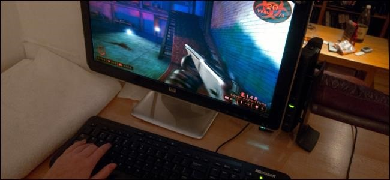
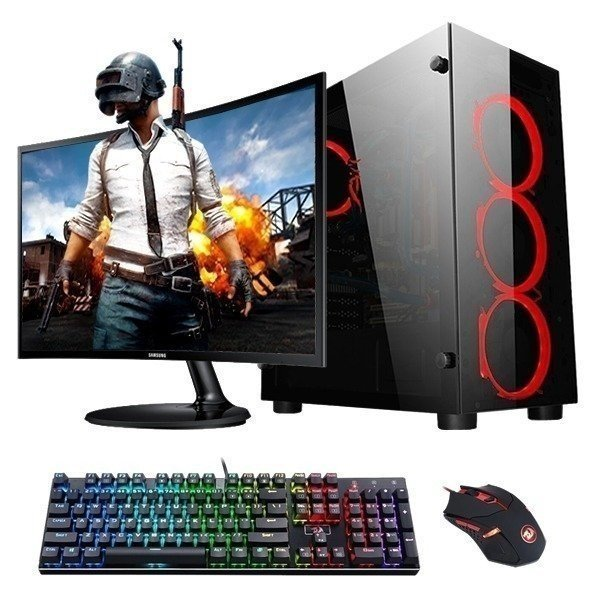

Entretenimiento
Steam PC
Steam es una plataforma de distribución digital, gestión digital de derechos, comunicaciones y servicios multijugador desarrollada por Valve Corporation. Es utilizada tanto por pequeños desarrolladores independientes como grandes corporaciones de software para la distribución de videojuegos y material multimedia relacionado. Steam además ofrece varias maneras para la comunicación entre los miembros de la comunidad, la posibilidad de utilizar chat de voz en cualquier momento y actualizaciones automáticas para todos los juegos que ofrece.

El servicio principal de Steam es el de permitir a sus usuarios descargar juegos y otro software desde sus bibliotecas de software virtual a sus ordenadores. Los juegos que son integrados en Steam son almacenados en el disco duro como archivos únicos no comprimidos con la extensión .gcf (acrónimo de Game Cache File12- Archivos de Caché del Juego en español). Steam asigna el espacio que será necesario para el archivo
Steam incluye un escaparate digital llamado la Tienda Valve, a través de la cual los usuarios pueden comprar juegos de ordenador digitalmente. Una vez comprados, el programa es asociado en forma permanente a la cuenta de Steam del usuario (sin embargo es posible "regalar" juegos a otras cuentas). El contenido es entregado utilizando un protocolo de transferencia de archivos propio de Steam desde una red internacional de servidores.
